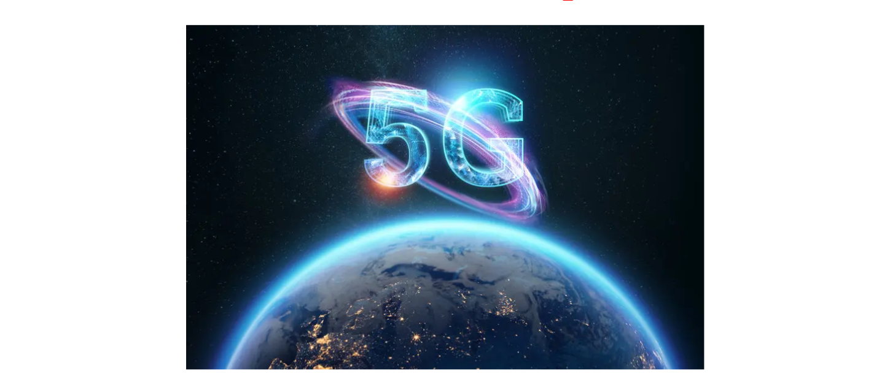
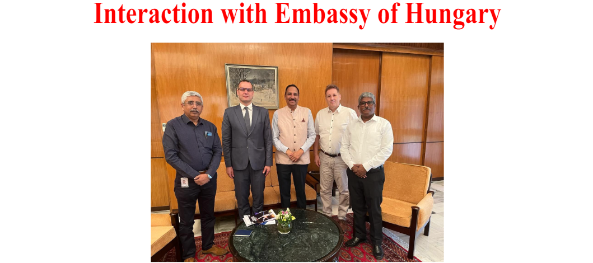
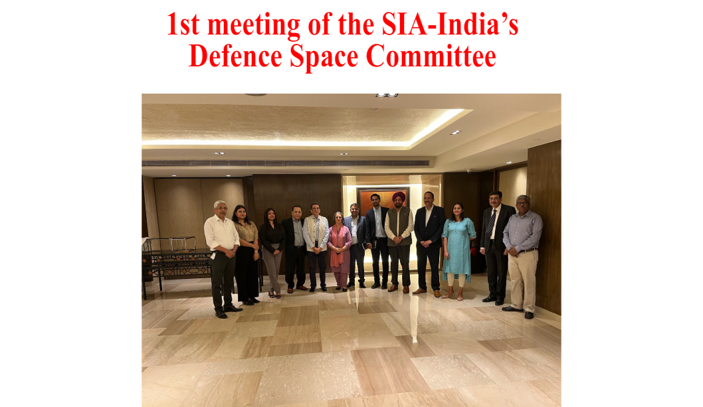
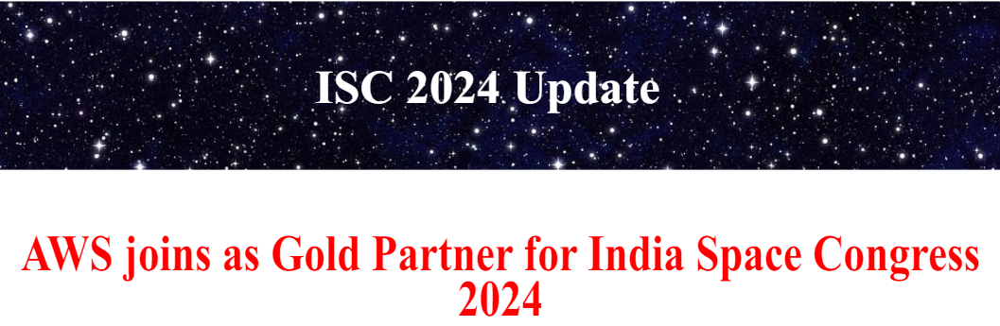
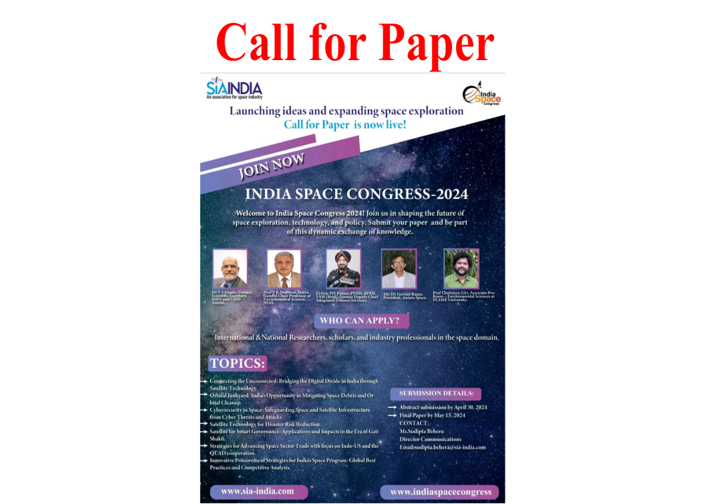

SIA-India partners with Information Sharing and Analysis Centre (ISAC) to develop standards for cyber physical systems, specialized
training and certification program and State-of-the art cybersecurity lab to secure non-terrestrial networks. The initiative came after a
momentous MoU signed between SIA-India and ISAC during DefSat 2024. The partnership will strive to establish standards focusing
on integration of cyber physical systems, edge computing, and IoT devices within the space systems

SIA-India commends TRAI for their recent open industry consultation on auctioning new spectrum bands for 5G IMT. The
auction of three new spectrum bands in higher frequency range, will make available around 4,000 megahertz radiowaves
for mobile services. The bands are different from the bands 800 MHz, 900 MHz, 1,800 MHz, 2,100 MHz, 2,300 MHz, 2,500
MHz, 3,300 MHz, and 26 GHz, which will be put on the block in the upcoming spectrum auctions scheduled for June 6.
While SIA supports this move, we emphasise the need to preserve essential satcom bands for satellite services. These
bands are crucial for space research, Earth Exploration Satellite, Broadcasting, Ground Stations, and Radio Navigation
Satellite services. Over-allocating bands to IMT services could hinder satellite services, which have substantial industry investments. Allocation should prioritize protecting adjacent services and ensuring optimal performance spacing.
SIA-India ....The Department of Telecommunications (DoT) has issued guidelines for
establishing and operating 'Spectrum Regulatory Sandbox' (SRS) or 'WITe Zones
(Wireless Test Zones)' to encourage R&D activities and outdoor testing in emerging
radio communications technologies. SIA-India has constantly advocated for suchinitiatives that encompasses testing new satellite technology and creating a live testing
environment for emerging technologies, services, and use cases.
It also facilitates the monitoring and control of satellite constellations and space assets
while enabling cross-sector cooperation. Moreover, it enhances data transmission, optimizes satellite operations, and elevates Earth observation capabilities, thus fostering innovation and fortifying the startup ecosystem.
The Department of Telecommunications plans to consult TRAI on satcom spectrum allocation and licensing for satellite communication services. TRAI's consultation paper on
space-based communication services was redirected to DoT post-new Telecommunication
Act. DoT aims to clarify licensing scope and pricing for satcom. Players like OneWeb and
Jio Satcom already hold licenses for satellite telephony and VSAT services.
SIA-India has championed administrative licensing for spectrum allocation, a provision
now enshrined in the Telecommunication Act of 2023. Yet, uncertainties persist in discussions concerning the precise scope of such licensing, raising apprehensions. SIA-India
advocates for a unified connectivity paradigm via space-based communications. Regulators and policymakers must prioritize safeguarding critical spectrums, ensuring allocations are not subjected to alternative methods beyond licensing
Union Transport Minister Nitin Gadkari has unveiled plans for a groundbreaking satellite-based toll collection system in
India, aiming to enhance efficiency and convenience for commuters. Unlike FASTag, this system utilizes the Global Navigation Satellite System (GNSS) for precise location tracking, enabling accurate distance-based toll calculations. With payments deducted from a digital wallet linked to the On-Board Unit (OBU), pilot projects are underway on selected sections
of National Highways to test its efficacy. As India transitions to this advanced toll collection system, it signifies a significant step towards modernizing transportation infrastructure and improving the commuter experience on Indian highways
ISRO Chairman Shri S. Somanath reveals the ongoing development of India's lunar mission, highlighting our nation's commitment to space exploration. With PM Modi's vision guiding ISRO of landing an Indian on moon by 2040, it is paving the
way for a brighter future in space technology, inspiring students nationwide.
Chandrayaan-4, which aims to collect moon rocks and soil and bring them back to Earth. The mission will utilize two rockets and feature five spacecraft modules, setting India apart in lunar exploration and scientific research. Scheduled for
launch in 2028, Chandrayaan-4 will solidify India's position among the few nations capable of returning lunar samples for
study. ISRO's commitment to advancing space exploration and technology is evident in this ambitious endeavor.
Google is reportedly adding a new feature to Android 15, allowing users to send messages over satellite connectivity
through the Messages app. Strings found in the beta version suggest that users will need a clear view of the sky for messaging, with limitations on multimedia files. Unlike Apple's satellite support, Google's feature extends beyond emergencies
to include regular messaging, whereas Apple provides support for satellite connectivity in select regions. Additionally, Android 15 will enable apps to detect satellite connections and utilize satellite connectivity for messaging without relying on
mobile or Wi-Fi networks.
In a crowning moment, Dr. Subba Rao Pavuluri, President of SIA-India and Chairman & MD of Ananth Technologies Ltd, for
receiving the prestigious Aryabhata Award instituted by the Astronautical Society of India (ASI). He was felicitated by Dr. S
Somanath, Chairman ISRO, Secretary DoS, and President ASI, and Dr. A S Kiran Kumar, (former) ISRO Chairman and Chairperson of the Vikram Sarabhai Space Centre. Dr. Pavuluri is also the recipient of the Bhaskar Award for his contribution to
Space Technology and has received an Honorary Doctorate (HONORIS CAUSA) for outstanding contributions to Aerospace
Engineering and Applications from Vignan University during 2023. With over four decades of experience in the Indian
Space Program (ISRO), Dr. Rao has spearheaded numerous groundbreaking projects and contributed significantly to India's space program.

Ahead of the India Space Congress 2024, our Director General Anil Prakash, along with Sr. Director (Technology and
Policy) Rajeev Gambhir, and Dy. Director Anbalagan K engaged in an inspiring meeting with Lt. Colonel Laszlo Kovari, Defence, Military Air Attachè and Mr Levente Kardos, Economic & Commercial Counsellor, Embassy of Hungary, discussing
exciting collaborations in space exploration and technology.
Save the date: June 26th-28th at The Lalit, New Delhi

Under the leadership of Lt Gen PJS Pannu, the Defence Space Committee convened to address critical challenges facing the
sector and chart a strategic course for SIA-India. The meeting emphasized the imperative for advanced satellite technology, industry capability mapping, licensing reform, technology transfer facilitation, streamlined approval processes, cybersecurity
initiatives, and the proposal for sub-committees to enhance coordination. Key requirements include fostering industry partnerships, easing regulatory frameworks, promoting technology transfer, and enhancing cybersecurity measures to propel India's
space defence capabilities


After the resounding success of last year's event, we're thrilled to announce the launch of the Call for Papers for ISC 2024.
Join us in shaping the future of space exploration with your innovative contributions.
Join us as the stars align at ISC 2024, where innovators and visionaries converge for a propitious future of space exploration. Get ready to embark on a journey beyond the horizon as we unveil the first promo video, for India Space Congress
2024!
Gilat has developed a breakthrough Electronically Steered Antenna (ESA) system for
SATCOM-on-the-move connectivity. This ESA system has been proven in flight and has
demonstrated remarkable performance. The ESA system is based on Gilat’s innovative
Ku & Ka-band active phased array technology.
SIA-India is proud of its valued member GalaxEye, who had the honor of representing
itself at the prestigious Google for Startups forum. Sia India congratulates GalaxEye for
championing true indigenisation. Google for Startups Accelerators serve top
growth-stage startups with tailored technical, product, and leadership training from
Google experts.
SIA INDIA reaffirms the importance of reserving key satcom bands for satellite services
regarding the auction of 4,000 MHz spectrum in new bands.
"These bands hold immense significance for space research, Earth Exploration Satellite,
Broadcasting, Ground Stations, and Radio Navigation Satellite services. Furthermore,
overzealous allocation towards IMT services from the potential Satellite bands could
deter satellite services, which have a promising future with significant investments already made by the industry."